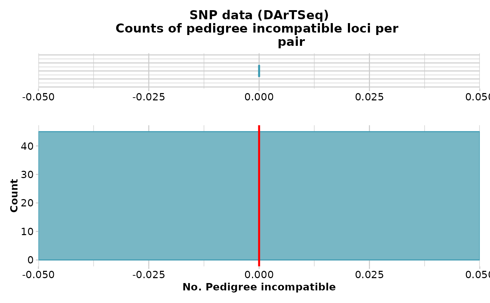
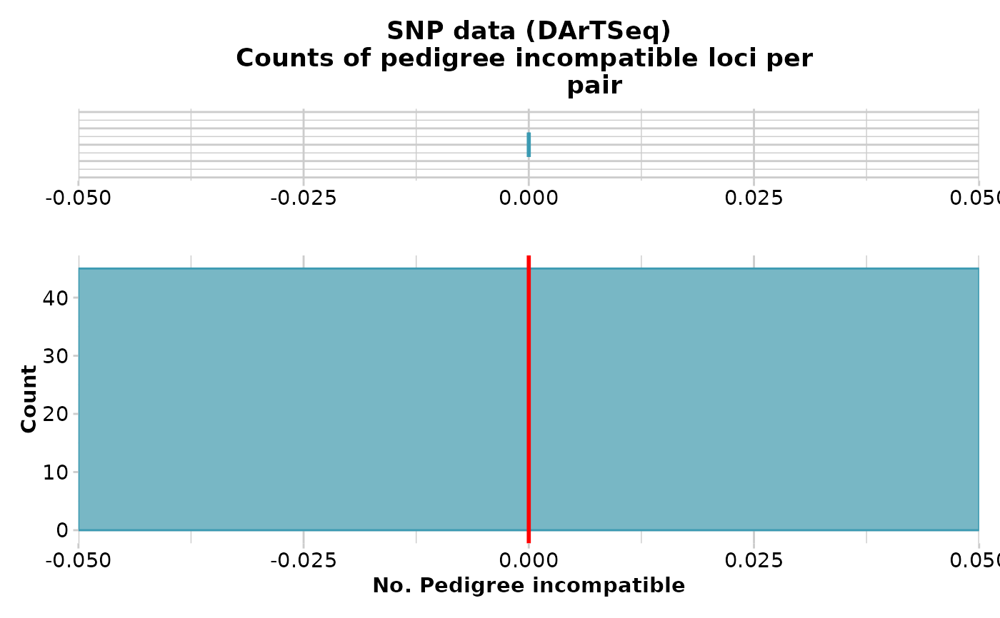

Filters putative parent offspring within a population
gl.filter.parent.offspring.RdThis script removes individuals suspected of being related as
parent-offspring,using the output of the function
gl.report.parent.offspring, which examines the frequency of
pedigree inconsistent loci, that is, those loci that are homozygotes in the
parent for the reference allele, and homozygous in the offspring for the
alternate allele. This condition is not consistent with any pedigree,
regardless of the (unknown) genotype of the other parent.
The pedigree inconsistent loci are counted as an indication of whether or not
it is reasonable to propose the two individuals are in a parent-offspring
relationship.
gl.filter.parent.offspring(
x,
min.rdepth = 12,
min.reproducibility = 1,
range = 1.5,
method = "best",
rm.monomorphs = FALSE,
plot.out = TRUE,
plot_theme = theme_dartR(),
plot_colors = two_colors,
save2tmp = FALSE,
verbose = NULL
)Arguments
- x
Name of the genlight object containing the SNP genotypes [required].
- min.rdepth
Minimum read depth to include in analysis [default 12].
- min.reproducibility
Minimum reproducibility to include in analysis [default 1].
- range
Specifies the range to extend beyond the interquartile range for delimiting outliers [default 1.5 interquartile ranges].
- method
Method of selecting the individual to retain from each pair of parent offspring relationship, 'best' (based on CallRate) or 'random' [default 'best'].
- rm.monomorphs
If TRUE, remove monomorphic loci after filtering individuals [default FALSE].
- plot.out
Specify if plot is to be produced [default TRUE].
- plot_theme
Theme for the plot. See Details for options [default theme_dartR()].
- plot_colors
List of two color names for the borders and fill of the plots [default two_colors].
- save2tmp
If TRUE, saves any ggplots and listings to the session temporary directory (tempdir) [default FALSE].
- verbose
Verbosity: 0, silent or fatal errors; 1, begin and end; 2, progress log ; 3, progress and results summary; 5, full report [default 2, unless specified using gl.set.verbosity].
Value
the filtered genlight object without A set of individuals in parent-offspring relationship. NULL if no parent-offspring relationships were found.
Details
If two individuals are in a parent offspring relationship, the true number of pedigree inconsistent loci should be zero, but SNP calling is not infallible. Some loci will be miss-called. The problem thus becomes one of determining if the two focal individuals have a count of pedigree inconsistent loci less than would be expected of typical unrelated individuals. There are some quite sophisticated software packages available to formally apply likelihoods to the decision, but we use a simple outlier comparison.
To reduce the frequency of miss-calls, and so emphasize the difference
between true parent-offspring pairs and unrelated pairs, the data can be
filtered on read depth. Typically minimum read depth is set to 5x, but you
can examine the distribution of read depths with the function
gl.report.rdepth and push this up with an acceptable loss of
loci. 12x might be a good minimum for this particular analysis. It is
sensible also to push the minimum reproducibility up to 1, if that does not
result in an unacceptable loss of loci. Reproducibility is stored in the slot
@other$loc.metrics$RepAvg and is defined as the proportion of
technical replicate assay pairs for which the marker score is consistent.
You can examine the distribution of reproducibility with the function
gl.report.reproducibility.
Note that the null expectation is not well defined, and the power reduced, if the population from which the putative parent-offspring pairs are drawn contains many sibs. Note also that if an individual has been genotyped twice in the dataset, the replicate pair will be assessed by this script as being in a parent-offspring relationship.
You should run gl.report.parent.offspring before filtering. Use
this report to decide min.rdepth and min.reproducibility and assess impact on
your dataset.
Note that if your dataset does not contain RepAvg or rdepth among the locus metrics, the filters for reproducibility and read depth are no used.
Function's output
Plots and table are saved to the temporal directory (tempdir) and can be
accessed with the function gl.print.reports and listed with
the function gl.list.reports. Note that they can be accessed
only in the current R session because tempdir is cleared each time that the
R session is closed.
Examples of other themes that can be used can be consulted in
See also
gl.list.reports, gl.report.rdepth ,
gl.print.reports,gl.report.reproducibility,
gl.report.parent.offspring
Other filter functions:
gl.filter.allna(),
gl.filter.callrate(),
gl.filter.heterozygosity(),
gl.filter.hwe(),
gl.filter.ld(),
gl.filter.locmetric(),
gl.filter.maf(),
gl.filter.monomorphs(),
gl.filter.overshoot(),
gl.filter.pa(),
gl.filter.rdepth(),
gl.filter.reproducibility(),
gl.filter.secondaries(),
gl.filter.sexlinked(),
gl.filter.taglength()
Examples
out <- gl.filter.parent.offspring(testset.gl[1:10])
#> Starting gl.filter.parent.offspring
#> Processing genlight object with SNP data
#> Warning: data include loci that are scored NA across all individuals.
#> Consider filtering using gl <- gl.filter.allna(gl)
#> Generating null expectation for distribution of counts of
#> pedigree incompatibility
#>

 #> Identifying outliers with lower than expected counts of
#> pedigree inconsistencies
#> Identifying outlying pairs
#> No individuals were found to be in parent offspring
#> relationship, therefore the genlight object is returned
#> unchanged.
#>

#> Completed: gl.filter.parent.offspring
#>
#> Identifying outliers with lower than expected counts of
#> pedigree inconsistencies
#> Identifying outlying pairs
#> No individuals were found to be in parent offspring
#> relationship, therefore the genlight object is returned
#> unchanged.
#>

#> Completed: gl.filter.parent.offspring
#>